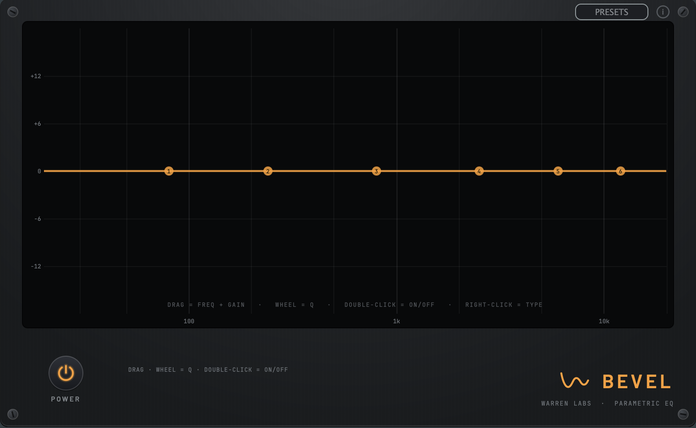

Trueness lineParametric EQ + analyzerBeta
Bevel
Ease every band true.

A clean six-band parametric EQ with a real-time analyzer, surgical when you need it, musical when you don't. It shapes the tonal balance without a voice of its own, so what you hear is the move you made and nothing else.
- Six bands: shelves, peaks, pass filters
- Real-time FFT analyzer
- Draggable nodes on a log-freq plot
- Transparent, minimum-phase
- VST3 / AU / Standalone
Part of The Reference Desk · $49
See The Reference Desk →